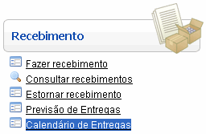
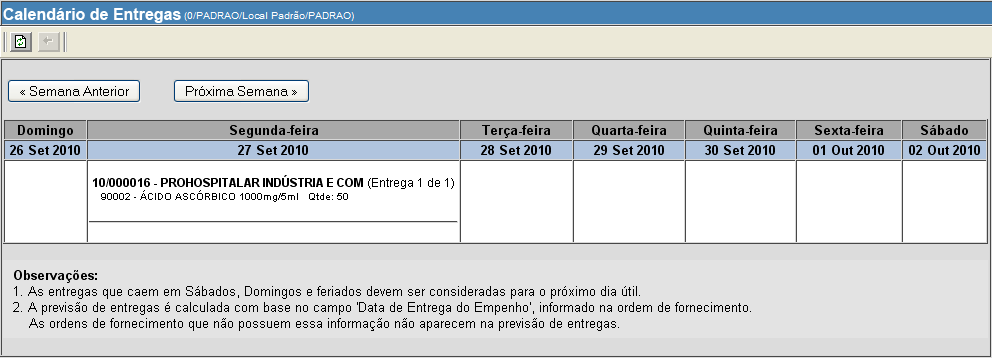
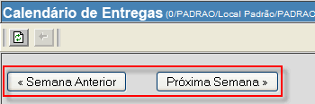

Calendário de Entregas [ Voltar ]Utilize este calendário semanal para visualizar todas as entregas programadas. São exibidas no calendário as entregas que pertencem a ordens de compra com status "Processada - aguardando recebimento" e "Parcialmente recebida". O formulário "Calendário de Entregas" encontra-se dentro do menu "Recebimento". 
Ao clicar no menu, a seguinte tela será exibida: 
Nesta tela é possível visualizar as entregas programas para a semana corrente. Abaixo do dia da semana, são exibidas informações como o número da ordem de compra, nome do fornecedor e produtos da entrega. Para visualizar a programação de entregas de uma outra semana, clique em "Semana Anterior" ou "Próxima Semana". 
Observações:
|